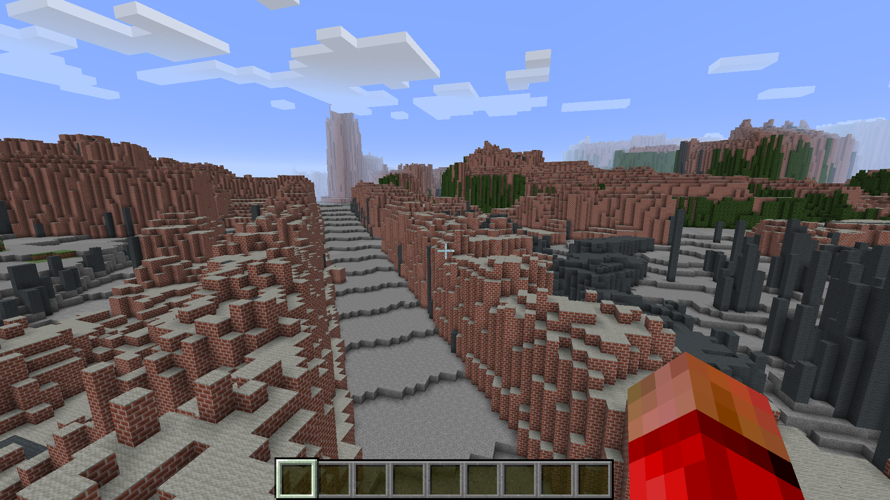
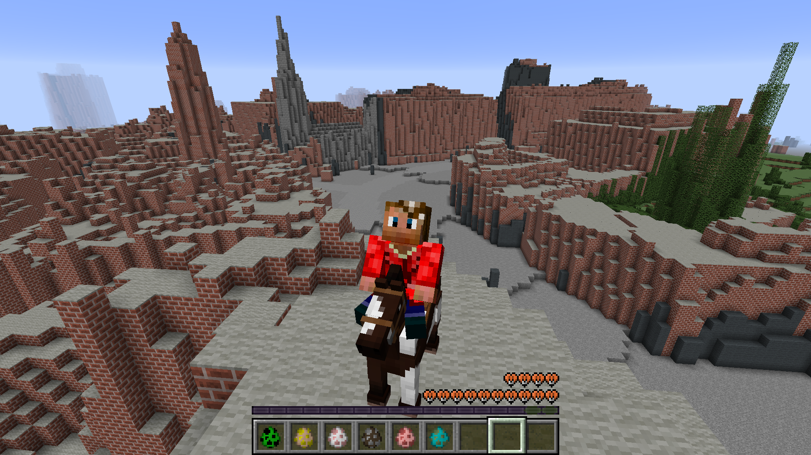

Minecraft Maps
This software allows you to create real places as Minecraft maps for you to explore and remodel as you see fit. It uses Google maps and LIDAR data to build a to-scale version of an area.


I found this software on GitHub a few years ago and had a great time wandering around cities and towns that I knew in real life. But when I tried to share it with friends, I found that the level of assumed knowledge on the original page was a large barrier to entry.
The link below is my attempt to make a guide for this software to make it as user friendly as possible so that more people can enjoy remodeling, destroying, decorating, mining and crafting in their home towns.
